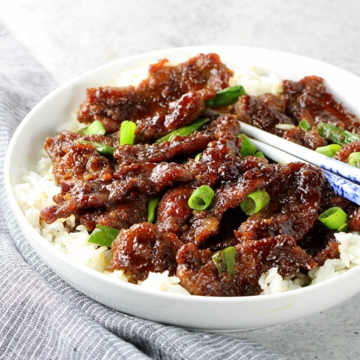

Home
Mongolian Beef

This is one of the crunchiest and spiciest Mongolian Beef recipes
Ingredients
- 1 1/2 lbs of flank steak, sliced thin against the grain
- 1/2 cup cornstarch
- 3 tablespoons vegetable oil
- 1/2 cup low-sodium soy sauce
- 1/2 cup brown sugar
- 1/4 cup water
- 1 tsp minced ginger
- 3 cloves garlic (minced)
- Pinch red pepper flakes
- Sliced green onions
Steps
- Coat steak with cornstarch
- Sear steak in oil & remove
- Mix sauce ingredients
- Boil sauce in pan
- Add steak back and simmer
- Garnish with green onions
- Serve over rice